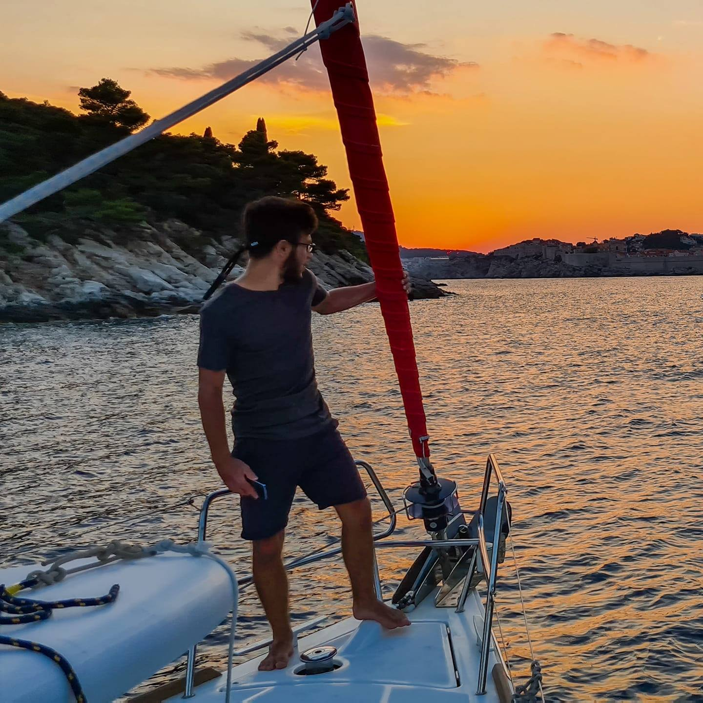

Ciekawostki i moje zainteresowania.
Uwaga, one w ogóle nie są ciekawe.
Nazywam sie Jakub Majcherski, mam lat, chodzę do Technikum Elektronicznego nr 1 w Warszawie i kompletnie nie mam pomysłu co tutaj napisać, więc będą głupoty. Pozdrawiam wszystkich którym chce się to czytać.

Ja, Chorwacja 2020
Interesuje się informatyką (kto by się spodziewał) i jest to powód dla którego zdecydowałem się kontynuować edukację w technikum. W momencie gdy to piszę na cały projekt minikursu składa się 7757 linijek 'kodu'. Piszę również własne aplikacje internetowe, które utrzymuję na własnych, dedykowanych serwerach (jestem w stanie zagwarantować SLA na poziomie 95%).
Kolejnym moim zainteresowaniem jest żeglarstwo zarówno morskie jak i śródlądowe, od 2014 roku posiadam uprawnienia żeglarza jachtowego. Miałem przyjemność pływać między innymi po wodach Oceanu Atlantyckiego i Morza Adriatyckiego. Na obecną chwilę posiadam ponad 400 godzin doświadczenia na jachtach morskich.